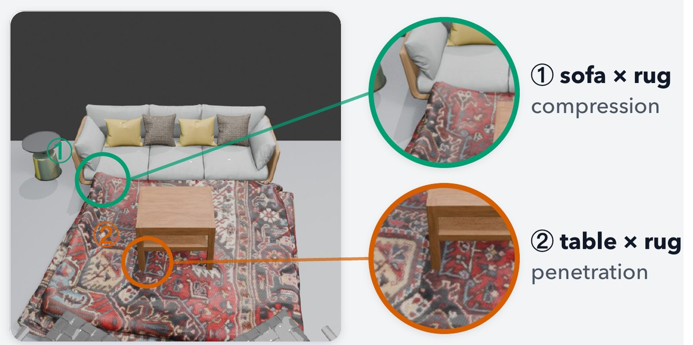
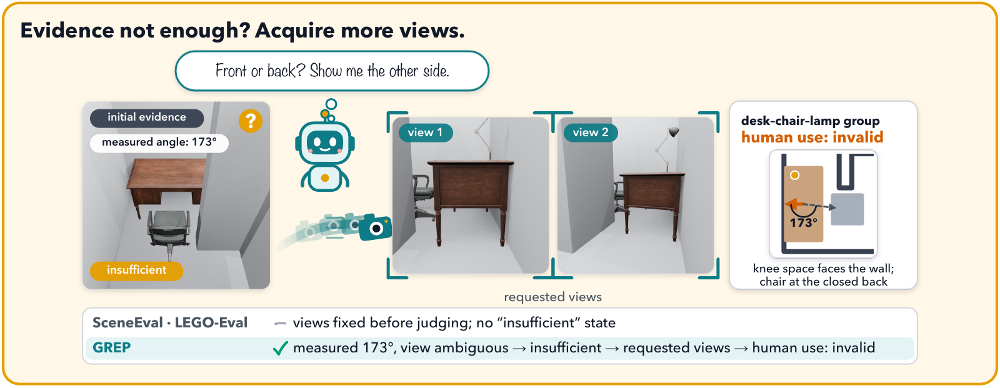
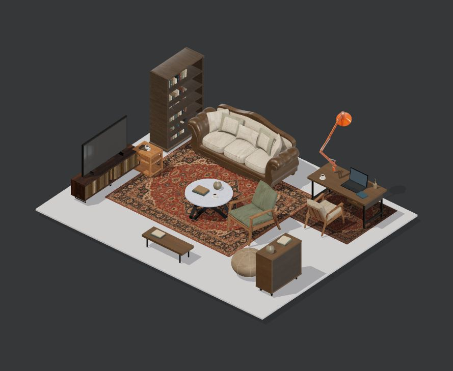
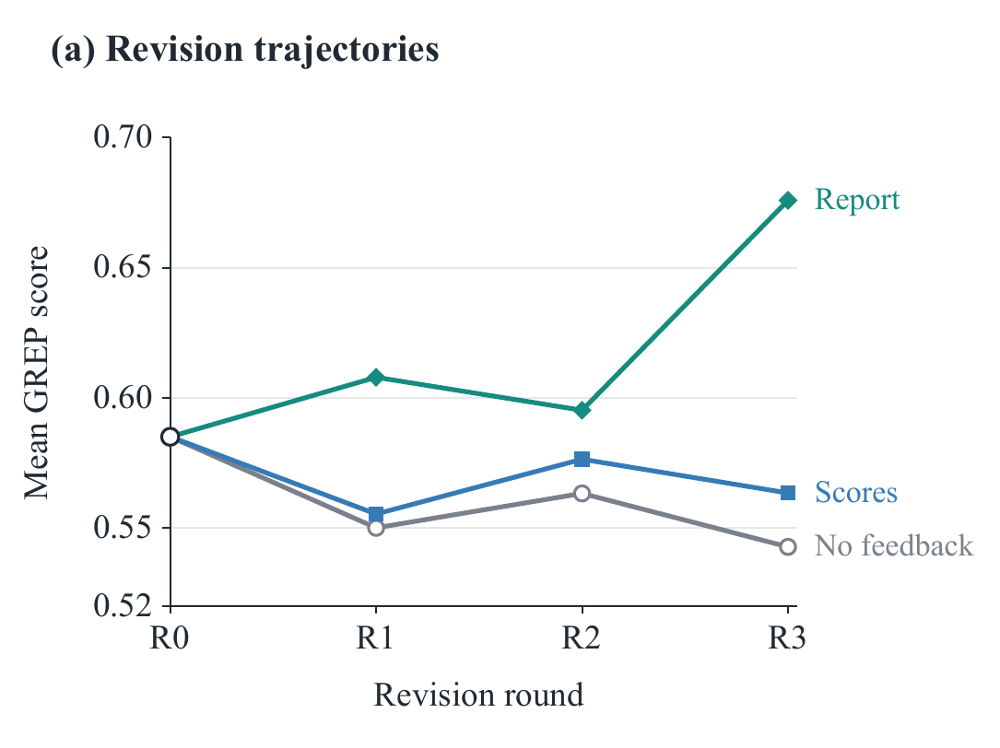

Context matters
Contact is not always a defect
- SceneEval
- Flags both rug contacts.
- GREP
- Clears sofa compression; confirms table penetration.
GREP evaluates generated 3D rooms through Physical Validity, Visual Coherence, and Human-Use—and grounds its judgments in scene evidence.
87% agreement with human preferences across 15 scene pairs vs 62% for a holistic VLM ↗Given a furnished 3D scene, GREP evaluates its quality and explains the problems it finds.
Models · Pipelines · Agents
 Furnished 3D scene
Furnished 3D sceneRooms need contextual judgments—and the right questions.


Principles and check types stay fixed. GREP selects the objects and relationships that warrant inspection—including the facing chairs above.
Check instantiation · Appendix A ↗A 173° angle cannot identify the desk’s usable side. GREP requests two views and finds the chair at its closed back.
Evidence operations · Paper p. 4 ↗
The principles guide what to check. The evidence determines the judgment.
Identify the objects and relationships that need inspection in this room.
Can the cabinet door open fully?Budget reached? Record the unresolved gap.
Overall · Principles · Metrics
Affected objects · Reasons · Evidence
Choose a check, inspect its evidence, and follow the diagnosis. The A–C tags match the principles above.

The interactive view will appear when loading finishes.

Agreement with people—and differences in how generators use guidance.
15 pairs · 6 scenes · 5 raters. Holistic VLM averaged over three runs. Figure 6 ↗
LayoutVLM improves GPT-4.1 over native placement.
FrozenAssets* · Table 2 ↗All four tested pipelines reduce Sol’s Overall.
FrozenAssets* · Table 2 ↗With an agent harness, HY4 outperforms Sol. Stronger planning still needs adaptation to constraints.
Default constraints · Table 3 ↗FrozenAssets* excludes Visual Coherence from Overall. Integration is a research direction, not a capability demonstrated here.
A diagnosis gives the generator a concrete problem to address.
Mean score after three report-guided revisions. Score-only and no-feedback branches decline.
Five scenes · GPT-4.1 · Separate 0–1 refinement protocol; these are not leaderboard scores divided by 100.
Reports changed the layout in 15/15 revisions, versus 5/15 with scores alone.

From the paper’s Table 9; separate from the selected benchmark example.